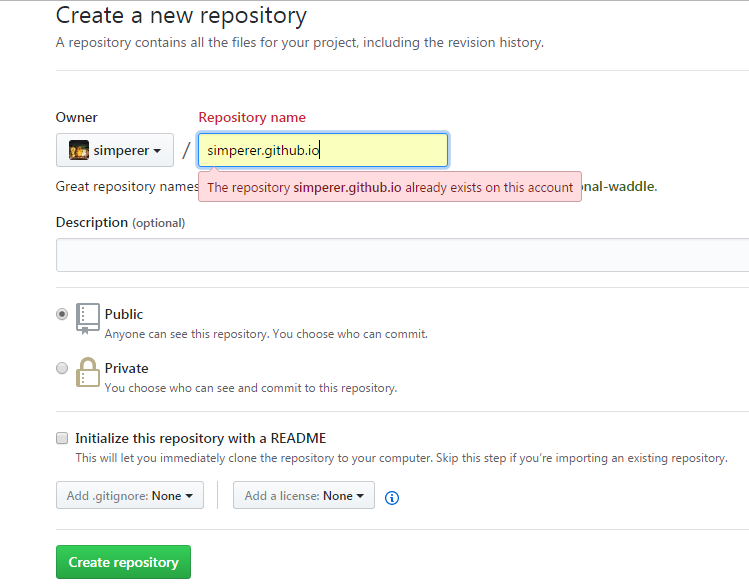
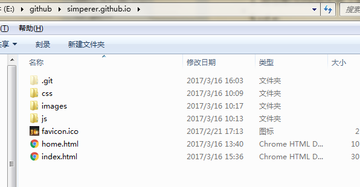

通过github pages创建个人站点(github.io博客)
2017年3月4 by simperer
开始前工作：1.申请github 账号 (略) 2.下载安装git (略);
git安装完后，打开git bash，进行配置(user.name 与 user.email),使用命令：
$ git config --global user.name "simperer"
$ git config --global user.email "hua20150113@163.com"
因为Git是分布式版本控制系统，所以需要填写用户名和邮箱作为一个标识。
一、在github 上创建仓库(New repository)
仓库名称必须为 username.github.io 格式

tips:什么是版本库？版本库又名仓库，英文名repository,你可以简单的理解一个目录，这个目录里面的
所有文件都可以被Git管理起来，每个文件的修改，删除，Git都能跟踪，以便任何时刻都可以追踪历史，
或者在将来某个时刻还可以将文件”还原”。
二、git 命令
- 将仓库clone到本地（如 E:\github 目录下）
$ cd e:
$ cd github
$ git clone https://github.com/simperer/simperer.github.io.git
注意:修改为你的仓库地址
- 添加内容到本地仓库中
在我们的root目录(在这里即为 E:\github\simperer.github.io)下建立一个index.html 页面

页面完成后进行git命令
- 使用命令git add .添加到暂存区里面去
- 使用命令git commit -m "注释"告诉Git，把文件提交到仓库
- 使用命令git push输入用户名密码即可(github账号密码)
tips：在开始的时候就配置一下默认的git的用户名和密码，这样子就可以在每次的push的时候
不需要手动的在去输入git的用户名和密码，提高执行的效率。
三、访问个人站点
网址: https://simperer.github.io/